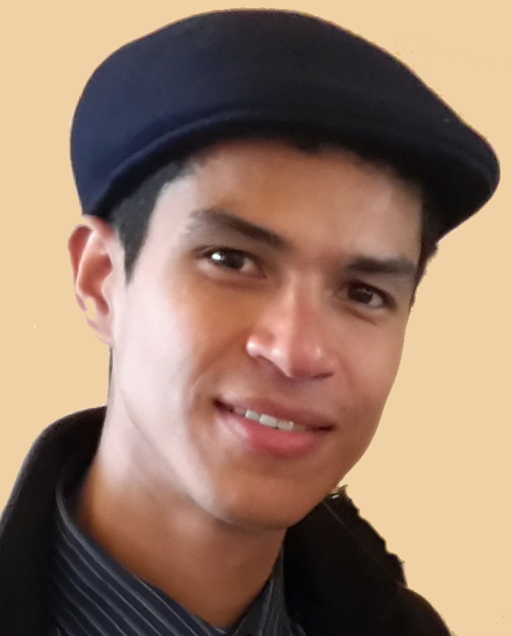

XAIDATA
Spring School on Explainability of Data Intensive AI Systems at the ETIS laboratory, CY University/ENSEA/CNRS
Application process
- Please fill in the provided form in the application link.
- Applications are free.
- Coffee breaks and lunches are offered and organised at the school, to promote networking.
- 25 participants max
Applications link: Application Form
School Program (Provisional)
Motivation and Objectives
AI systems increasingly influence decisions in science, policy, and daily life. Understanding the data and its relationship to trained models is essential for building safe, reliable, and compliant AI systems across diverse applications, as all model decisions are rooted in training data. To this end three complementary families of interpretability methods have been proposed to shed light on data-intensive automated decision systems: (a) Explainable AI focusing on feature attribution to understand which input features drive model decisions; (b) Data-Centric AI emphasizing data attribution to analyze how training examples shape model behavior; (c) Functional Interpretability examining component attribution to understand how internal model components contribute to outputs. Different interpretability methods are currently used by different tasks of modern pipelines required to build modern AI systems.
The proposed ETIS Spring School on the Explainability of Data Intensive AI Systems aims to bring together researchers and students from data management, artificial intelligence, and responsible computing to explore how transparency and interpretability can be effectively integrated into data driven environments. The workshop will investigate how explainability can provide actionable insights in different learning settings as Recommendation Rankings, Time-to-Event predictions, Graph-based Classification or Regression, Retrieval Augmented Generation (RAG) pipelines, Causal Feature Selection and Queries over Inconsistent Data.
With this school we aim to
A participation certificate will be provided upon demand, at the end of the school.
- exchange and discuss recent advances in explainability for data intensive AI systems,
- provide a training and mentoring environment for master students, doctoral and postdoctoral researchers, and early carreer researchers,
- identify methodological challenges and opportunities for joint research on graph learning, recommendations, causal explanation methods and RAG pipelines,
- establish future collaborations, including publications, proposals, and student mobility initiatives.
Speakers
Professor Vassilis Christophides, ENSEA
Prof. Vassilis Christophides studied Electrical Engineering at the National Technical University of Athens (NTUA) in 1988, he received his DEA in computer science from the University PARIS VI in 1992, and his Ph.D. from the Conservatoire National des Arts et Metiers (CNAM) of Paris, in 1996. From September 2020, he joined as Full Professor the École Nationale Supérieure de l’Électronique et de ses Applications (ENSEA), Cergy. Previously, he has served the Computer Science Department of the University of Crete for 16 years. His main research interests span Machine Learning Systems, Data Science and Big Data Computing, Databases and Web Information Systems, as well as Digital Libraries and Scientific Systems. On these topics, he has published over 170 articles in top-tiered journals and conferences. His research work has received more than 8600 citations with an h-index 50 according to Google Scholar. He was a recipient of the 2004 SIGMOD Test of Time Award, and of several best paper awards in BDA (2021), ISWC (2003, 2007, 2009). He chaired (General Chair of the EDBT/ICDT Conference in 2014, Area or Track Chair in KDD 2024&2025, ICDE 2016, SCC 2004, EDBT 2004) or served on program committees of numerous conferences (SIGMOD, VLDB, ICDE, EDBT, WWW, KDD, CIKM, etc.) while he has also acted as reviewer of several journals (CACM, TODS, TOIS, TOIT, VLDB Journal, TDKE, DPS, etc.). He has also been a keynote or invited speaker in conferences and summer schools (PODS 2003, HDMS 2004, ESWC Summer School 2013, WebST 2016, BDA Summer School 2018, GDR RO/IA Summer School 2023, ForgtAI 2026).
Researcher Luis Galarraga, INRIA Rennes
TBAAssociate Professor Yue Ma, University of Paris Saclay
Yue Ma is an Associate Professor at Unviersity Paris-Saclay and the LISN laboratory in France. Her research interests include inconsistency handling and measuring for knowledge bases, semantic web, ontology modularization, description logic based ontology construction. She has published in top-tier conferences or journals (AAMAS, KR, ECAI, ISWC, ESWC, JELIA, K-CAP, etc.) and has served as PC of major international conferences/journals (AAAI, IJCAI, IJAR, ECAI, ISWC). She has co-organised the first and second International Workshop on Hybrid Question Answering with Structured and Unstructured Knowledge with WWW2018 and K-CAP2019.Professor Evaggelia Pitoura, University of Ioannina, Greece
Evaggelia Pitoura is a Professor at the Department of Computer Science and Engineering at the University of Ioannina and a Lead Researcher at Archimedes Research Unit, Athena RC, Greece. She holds a BEng degree from the University of Patras, Greece, and an MS and PhD from Purdue University, USA. Her current research interests focus on two primary areas: responsible data management, with a focus on fairness, explainability, and their interplay; and on graph exploration and analysis. For her work, he has received best paper awards, a Marie Currie Fellowship and two Recognition of Service Awards from ACM. She is an ACM senior member, founding chair of the Hellenic ACM SIGMOD chapter, and member of the sectorial scientific council of Greece National Council for Research, Technology and Innovation.Associate Professor Katerina Tzompanaki, Cergy Paris University
Katerina Tzompanaki is an Associate Professor at CY Cergy Paris University, and the ETIS laboratory in France. Previously, she has been a visiting researcher at Télécom SudParis Palaiseau, a post-doctoral researcher at Télécom ParisTech, and a PhD candidate at University of Paris Saclay. She has obtained her Electrical and Computer science engineering diploma from the National Technical University of Athens. Her research focuses on the explainability of data processes and machine learning algorithms. Her work has been published in top-tier international conferences such as VLDB, ICDE, CIKM, EDBT, PAKDD, ISWC among others. She has previously co-organised the `Forging Trust In Artificial Intelligence' Workshop 2024 and 2025, co-located with the 'International Joint Conference on Neural Networks (IJCNN)' conference. Moreover, she has served as Publicity co-chair for the `International Conference of Web Engineering 2024' (ICWE24) and currently serves as the Publications co-Chair of the International Conference on Information Technology for Social Good (GoodIT26). Finally, she regularly serves in the program committees of top-tier conferences like IJCAI, VLDB, SIGMOD, AAAI, EDBT, and CIKM.TBA
Organisers
- Vassilis Christophides (ETIS, CNRS, ENSEA, CYU, France)
- Evi Pitoura (University of Ioannina, Greece)
- Dimitris Kotzinos (ETIS, CNRS, ENSEA, CYU, France)
- Katerina Tzompanaki (ETIS, CNRS, ENSEA, CYU, France)
Sponsors


Contact
For general enquiries, program questions, or travel information, contact the organisers.
- SpringSchool email: Katerina Tzompanaki